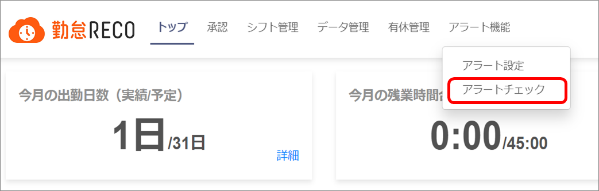
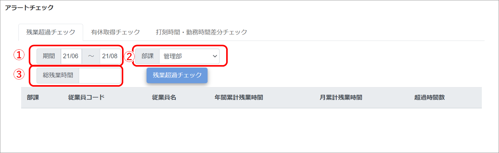
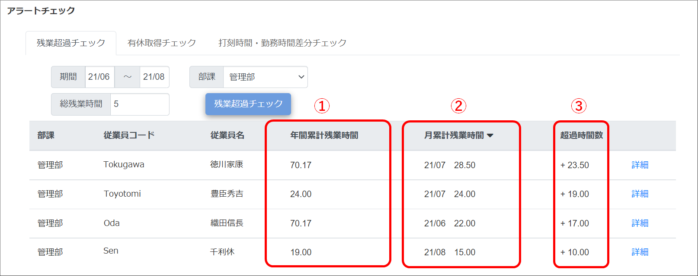
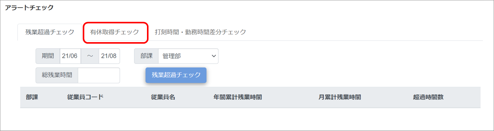
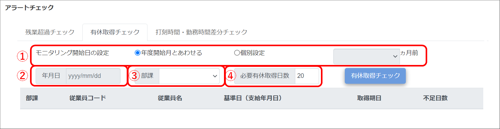
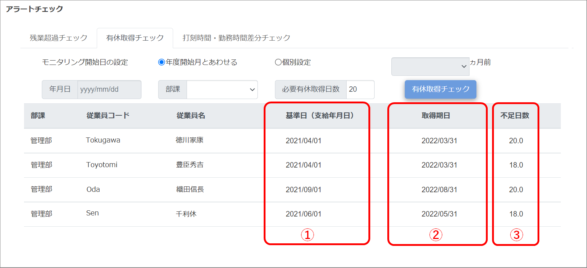
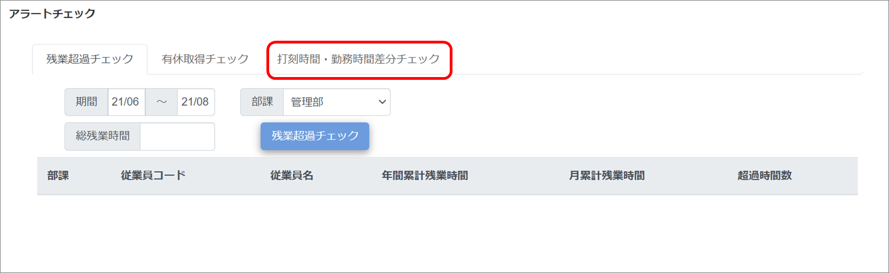
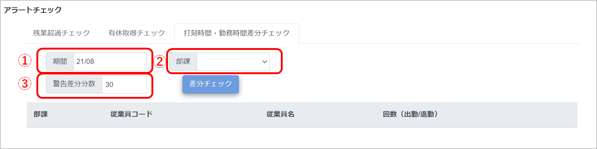
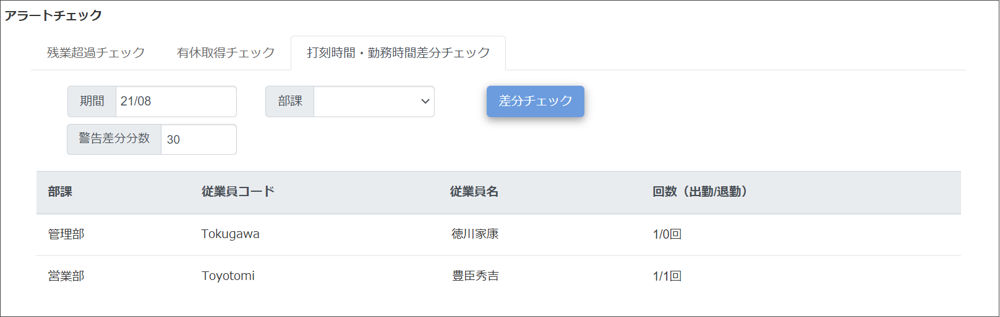

アラートチェックする
［アラートチェック］メニューでは、期間や部課を指定して、従業員の「月間残業時間」、「有休取得日数/時間」、「打刻時間・勤務時間差分」をチェックできます。
ご注意 |
アラート機能を操作できるのは、人事担当者アカウント、システム管理者アカウントです。 |
|---|
残業超過チェック
-
［アラート機能］をクリックし、［アラートチェック］をクリックする

「アラートチェック」画面が表示されます。
-
検索条件を入力する

-
期間
残業超過チェックを行いたい期間を入力します。カレンダーから選択します。
-
部課
対象者を部課で絞り込む場合に、ドロップダウンリストから部課を選択します。
-
総残業時間
検索の基準となる総残業時間を入力します。
検索結果には、月累計残業時間が総残業時間を超過しているデータが表示されます。
-
-
［残業超過チェック］ボタンをクリックする

指定した期間内に「総残業時間」を超過したデータが表示されます。
［詳細］をクリックすると、「月別残業時間推移」画面が表示されます。
年間累計残業時間
年間の累計残業時間が表示されます。
月累計残業時間
「総残業時間」を超過したデータが表示されます。
超過時間数
「総残業時間」を超過した時間数が表示されます。
有休取得チェック
-
［アラート機能］をクリックし、［アラートチェック］をクリックする
「アラートチェック」画面が表示されます。
-
［有休取得チェック］タブをクリックする

-
検索条件を入力する

-
モニタリング開始日の設定
「10日以上の有給休暇」の支給年月日の対象範囲を設定します。
年度開始月と合わせる：当年度内の支給を対象にする
個別設定：「年月日」の1年前～「年月日」の○ヵ月前までの支給を対象にする
-
年月日
「個別設定」を選択した場合に設定します。カレンダーから選択します。
-
部課
対象者を部課で絞り込む場合に、ドロップダウンリストから部課を選択します。
-
必要有休取得日数
年間の必要有休取得日数を設定します。
-
-
［有休取得チェック］ボタンをクリックする

「必要有休取得日数」に達していない従業員が表示されます。
-
基準日（支給年月日）
有給休暇を支給した支給年月日が表示されます。
-
取得期日
有給休暇の支給年月日から1年後の前日日付が表示されます。
-
不足日数
「必要有休取得日数」に足りない日数が表示されます。
ヒント
時間有休は必要有休に含まれません。
-
打刻時間・勤務時間差分チェック
-
［アラート機能］をクリックし、［アラートチェック］をクリックする
「アラートチェック」画面が表示されます。
-
［打刻時間・勤務時間差分チェック］タブをクリックする

-
検索条件を入力する

-
期間
差分チェックを行いたい期間を入力します。カレンダーから年月を選択します。
-
部課
対象者を部課で絞り込む場合に、ドロップダウンリストから部課を選択します。
-
警告差分分数
検索の基準となる差分分数を入力します。
-
-
［差分チェック］ボタンをクリックする

勤務開始時刻より「警告差分分数」以上に早く出勤打刻した回数、および勤務終了時刻より「警告差分分数」以上に遅く退勤打刻した回数が表示されます。